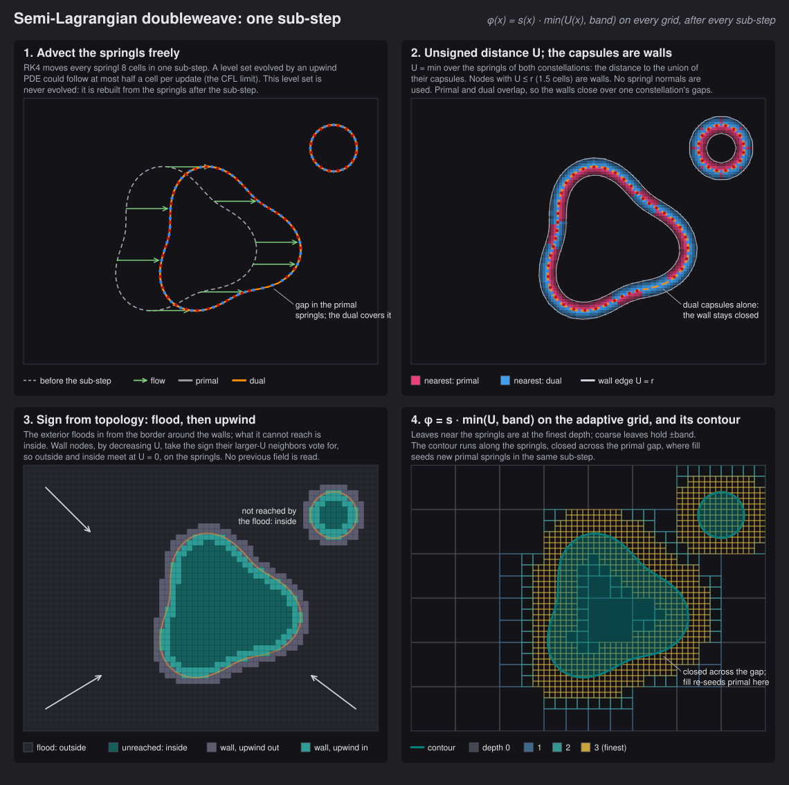

Springls (Spring Level Sets)
Deformable models that are parametric, watertight, grid-adaptive, and semi-Lagrangian in 2D and 3D
Abstract
Meshes track deforming surfaces precisely but must be re-meshed under large deformation and cannot easily change topology; level sets change topology freely but lose sub-cell detail and are bound by a CFL limit. Spring level sets [1] are a mesh-free alternative: they carry the interface on small, disconnected Lagrangian elements, springls, which are resampled locally instead of re-meshed, while a level set supplies the topology. This project is a C++ implementation of the method in 2D and 3D, together with three extensions. Doubleweave springls use two interleaved, staggered constellations whose union covers the interface without gaps, so each can detect and refill its own holes. Adaptive variants keep a block-adaptive quadtree / octree level set at its finest resolution only in a band around the springls. A semi-Lagrangian doubleweave rebuilds the level set from the springls at every sub-step instead of evolving it with a PDE, signing it by topology rather than by springl normals, which removes the CFL limit. On the Enright deformation test [2] the adaptive methods recover the 2D circle within 0.7% area and the 3D sphere within 2.5% volume where the uniform methods lose the interface, and the semi-Lagrangian doubleweave reaches the lowest shape error of all, using 6–28× fewer sub-steps when the CFL limit binds.
1Introduction
Deformable models — active contours in image segmentation, free surfaces in fluid simulation, tracked organs in medical imaging — must follow an interface through deformations that are often large, non-rigid and fluid-like [20][19]. The two classical representations each fail in a different part of that range.
Meshes are Lagrangian but connected. A triangle mesh tracks the boundary explicitly by moving its vertexes, so it is precise, carries point correspondences, and is cheap to advect. But its connectivity is a liability under large deformation: where the surface stretches, triangles grow and sample it too coarsely; where it compresses, they crowd, fold, flip and self-intersect. The mesh must therefore be re-meshed periodically, and because every triangle must stay connected to its neighbors to keep the surface watertight, re-meshing is a global, delicate operation that disturbs vertex tracking. Topology changes are harder still: two fronts that collide or a filament that pinches off require detecting the event, cutting the mesh and stitching it back together without self-intersections [18][21]. For these reasons meshes are avoided where the model undergoes large non-rigid deformation, is expected to change topology, or is likely to self-intersect [19].
Level sets are robust but Eulerian. A level set [4][16] stores the interface implicitly on a fixed grid, so it never needs re-meshing, cannot self-intersect, and merges and splits for free. But it has no parameterization: it cannot carry correspondences or labels on the surface, its explicit upwind update moves the interface at most a fraction of a cell per step (a CFL limit), and numerical diffusion erases any feature thinner than a grid cell — the volume loss that the Enright test [2] was designed to expose.
A mesh-free Lagrangian representation. Spring level sets [1] take the precision of the mesh and the robustness of the level set by removing the mesh's connectivity. The surface is a constellation of small, disconnected elements (springls) advected by the flow, held together only by soft attraction forces; a level set evolved toward them supplies the topology and a watertight surface. This changes what each hard mesh operation costs:
- No re-meshing. Because no springl is connected to another, resampling is purely local: springls that drift off the surface are deleted, and gaps are filled by adding new springls on the contour. There is no global re-triangulation, however large the deformation, and new springls inherit correspondences from their neighbors.
- Free topology changes. Merging and splitting are decided by the level set, not by cutting and stitching elements. Springls left without surface beneath them are simply contracted away.
- Topology changes are easy to detect. The level set's contour (or surface) components, and in the semi-Lagrangian method the connected regions of the exterior flood, are the topology; a change shows up as a component appearing, vanishing or splitting, with no collision detection between elements.
- No self-intersections. The surface that is output is always a level-set iso-contour, which cannot self-intersect, while springls supply its sub-cell detail.
The original method still couples the springls to the grid in two ways, which motivate this work. First, a single constellation leaves small gaps between neighbors, and a gap is only detected through the level set, which itself depends on the springls. Second, the level set chases the springls with an explicit upwind PDE, so it can move at most half a cell per update: every advection sub-step is capped by a CFL condition the Lagrangian springls themselves do not need, and at coarse resolution thin features fall below a cell and vanish. The end point of this work is a representation that is mesh-free and semi-Lagrangian: springls carry all of the geometry, and the level set is not evolved at all but rebuilt from them at every step, as a by-product used only for topology and fill — so the time step is set by how the flow distorts the springls, not by the grid.
This project contributes:
- Doubleweave springls (§3.9): a primal constellation on contour edges and a dual constellation on contour vertexes, staggered by half an edge, each with its own level set for detecting and filling holes.
- Adaptive springls (§3.10): a block-adaptive quadtree (octree in 3D) narrow band [8][13] kept at its finest depth around the springls and moved with them every sub-step, with a one-sided springl correction and merging of compressed springls.
- Semi-Lagrangian doubleweave (§3.11): a level set rebuilt each sub-step from the springls alone, signed by an exterior flood around capsule walls and an upwind sweep, with strain-limited rather than CFL-limited time steps.
- 3D versions of all methods (§3.12) with quad, triangle and variable-valence dual springls, octree surface nets, and checkpointing.
- Enright deformation tests in 2D and 3D (§4), with GUI and headless runners that measure area/volume error, shape error, springl counts and timing.
2Background
2.1Level sets and narrow bands
A level set represents an interface as the zero crossing of a function φ, here a signed distance (negative inside). Moving the interface with a velocity field u means solving ∂φ/∂t + u·∇φ = 0, discretized with upwind differences [4]. Only values near the zero crossing matter, so narrow-band methods [13] store and update a band of cells around it; the sparse-field method [3] goes further and evolves only the cells adjacent to the zero crossing, rebuilding a few distance layers around them. Hierarchical sparse grids such as VDB [8] store the band in small dense blocks in a shallow tree. Pure level sets lose mass wherever the interface thins below a cell, which the particle level set method [2] counteracts with marker particles that correct φ, and which the Enright test was designed to expose.
2.2Spring level sets

enright2d
panels.Spring level sets [1] represent the interface with one constellation of springls: short, disconnected line segments (a particle with two arm vertexes) that are advected by the flow. The springls alone are not connected to each other, so they leave small gaps. A level set evolved toward the springls supplies the topology, and its iso-contour is the watertight representation of the surface. Each step, the springls are resampled against that contour: springls far from it are removed, and gaps along it are filled with new springls. Springls are held together by springs: each arm is pulled toward its rest length, and each arm vertex is attracted to the nearest vertex of a neighboring springl.
2.3Related work
Explicit surface trackers with level-set-driven topology changes [18] keep a connected mesh and resolve collisions locally; springls avoid connectivity altogether. Semi-Lagrangian contouring [14] rebuilds the surface from scratch each step from a semi-Lagrangian backtrace of the previous surface [15], avoiding the CFL limit of explicit level-set updates; the semi-Lagrangian doubleweave applies the same idea with springls as the Lagrangian carrier. Mesh extraction uses marching squares with saddle disambiguation [5] in 2D and surface nets [6] in 3D, with polygons on minimal octree edges as in dual contouring [7].
3Method
This section walks through one time step of every method, in the order the code runs it. All
methods share the same skeleton (SpringLevelSet2D::step()); doubleweave, adaptive and
semi-Lagrangian variants override individual stages. Positions are in level-set pixels; h
is the local cell size (1 on uniform grids, 2−depth on adaptive ones). Pseudocode is
simplified from the source in src/springls; names in monospace refer to
functions or tuning keys there.
3.1State and notation
A springl s is a particle ps with two arm vertexes vs,0, vs,1 (in 3D, a planar polygon of 3–16 vertexes around its particle), an outward normal ns, a size class (scale) σs, a velocity, and for tracking, a correspondence point on the initial interface. Alongside the springls, the simulation keeps:
- φ — a signed distance level set (negative inside) on a narrow band, either a uniform grid
(
NarrowBand2D) or a block-adaptive quadtree / octree (AdaptiveGrid2D,AdaptiveGrid3D); - U — the unsigned distance to the springls, |x − closest springl|, clamped to
unsignedMaxDistanceand computed with a segment (triangle) BVH [11]; - C — the iso-contour (iso-surface) of φ: the watertight representation of the interface, and the reference that springls are resampled against.
3.2The time step
One step() is advectionSubstepsPerStep (3) advection sub-steps; each
sub-step advects the springls, moves the level set to them, and resamples the springls against the
new contour.
procedure Step()
for sub ← 1 … advectionSubstepsPerStep do
Δt ← Advect(maxStepPixels, schedule cap) // RK4 + similarity fit
t ← t + Δt
if level set is rebuilt from springls then // semi-Lagrangian only
RebuildLevelSetAndContour()
Relax()
else
Relax()
EvolveLevelSetAndContour() // U, upwind PDE, contour, refine
Contract() // drop springls far from C
repeat // close every gap (≤ 16 passes)
n ← Fill(); Relax()
until n = 0
UpdateNormals(); UpdateUnsignedDistance()
UpdateTracking() // new springls inherit correspondences
if adaptive then MergeCompressedSpringls()3.3Advection
Particles and every arm vertex are moved independently by classic fourth-order Runge–Kutta,
with the velocity field (or the analytic Enright velocity) evaluated at each stage time so
time-varying flows are integrated correctly. The step size comes from the first RK stage: the
fastest particle moves at most maxStepPixels (⅓ px) — the CFL-style cap the level-set
PDE needs. The semi-Lagrangian method replaces it with a strain limit
(§3.11).
Advecting the vertexes independently bends and stretches a springl. Rather than accepting that, each springl is replaced by the similarity transform (rotation + uniform scale about its advected particle) of its previous shape that best fits its advected vertexes, the least-squares solution of Umeyama [10]. In 2D this is a single complex number z: with arms ae = veold − pold and we = venew − pnew,
z = Σe conj(ae) · we / Σe |ae|², ve ← pnew + z · ae
so the springl stays straight (planar in 3D), its particle stays where the flow put it, and its normal turns with the flow.
function Advect(maxStep, maxΔt)
k₁[s] ← u(ps, t) for all s
Δt ← min(maxStep / maxs|k₁[s]|, maxΔt) // SL: strain-limited instead
for all springls s in parallel do
ps ← ps + RK4(ps, Δt)
for each vertex e: vs,e ← vs,e + RK4(vs,e, Δt)
UpdateNearestNeighbors() // on the flow-advected vertexes
for all springls s in parallel do
z ← best similarity (rotation·scale) mapping old arms onto new arms
vs,e ← ps + z · (vs,eold − psold)
return Δt3.4Relaxation
Relaxation keeps neighboring springls joined end-to-end and their arms near rest length. Each
arm vertex has at most one nearest neighbor: the closest arm vertex of another springl within
nearestNeighborDistance (found with a hash grid, SpringlHashGrid2D). Each of
relaxIterations (4) iterations computes, per springl and in parallel:
- Attraction toward the neighbor vertex q, with a saturating
weight w = atanh(0.999 · clamp((|q − v| − rsep) / ((½ + rsep) σ), −1, 1)),
so a vertex is pulled hard when far from its neighbor and pushed back when overlapping it;
the motion is m = Δτ ·
sharpness· w · (q − v). - Arm spring: a radial force Δτ · k · (Lrest − |v − p|) with
k =
springConstant. - Moment: the tangential components of both motions sum to a rotation angle θ = Σ me × te, and the springl rotates rigidly about its particle by θ.
- New arm length = clamp(L + m·t + spring, ε,
maxArmLength·σ); the particle never moves.
procedure RelaxSpringl(s, Δτ)
θ ← 0
for each arm e do
a ← vs,e − ps; Le ← |a|; te ← a / Le
me ← 0
if neighbor q of vs,e exists then
w ← atanh(0.999 · clamp((|q − vs,e| − rsepσ) / ((½ + rsep)σ), −1, 1))
me ← Δτ · sharpness · w · (q − vs,e)
fe ← Δτ · k · (Lrest − Le)
θ ← θ + me × te
for each arm e do
r ← clamp(Le + me·te + fe, ε, maxArmLength·σ)
vs,e ← ps + Rotateθ(r · te)3.5Level-set evolution
The CFL-limited methods do not reconstruct φ; they evolve it toward the springls, which keeps it smooth and its topology stable. First U is recomputed from the springl segments. Then φ is advected by a pull field that points down the gradient of U, capped at 1.5 cells:
∂φ/∂τ + g · ∇φ = κw κ, g = −min(U, 1.5) · ∇U / |∇U|
discretized with first-order upwind differences [4] (one-sided differences chosen by the
sign of each component of g) and an optional mean-curvature term κ. Only the
sparse field [3] is updated: the zero layer (|φ| ≤ ½) moves at most half a cell per
pseudo-time step, and the layers ±1, ±2, ±3 around it are rebuilt as distances from their neighbors,
so the band never needs separate redistancing [16][17].
This is repeated signedEvolveIterations (16) times per sub-step.
procedure EvolveLevelSetAndContour()
U ← distance to springl segments (BVH, clamped)
repeat signedEvolveIterations times
for each zero-layer node x in parallel do
g ← −min(U(x), 1.5) · ∇U / |∇U|
Δφ(x) ← −(gx · Dx∓φ + gy · Dy∓φ) + κwκ // upwind
φ ← φ + clamp(Δφ, ±½); rebuild layers ±1, ±2, ±3; update layer lists
C ← MarchingSquares(φ) // surface nets in 3D
RefineContour(C)3.6Contour extraction and refinement
The contour is extracted with marching squares with saddle disambiguation [5] (in 3D, surface
nets [6]). Because φ is only first-order accurate, the contour is then
refined toward the springls for refineIterations (4) passes: each iso-vertex
finds the closest particle within refineProximity whose normal faces the same way, and
moves along that particle's normal onto its tangent line, weighted by proximity. Near springls the
vertex is also smoothed tangentially (evening out spacing); away from them it is smoothed only
along its normal.
procedure RefineContour(C)
repeat refineIterations times
for each contour vertex c with neighbors c₋, c₊ do
n ← contour normal at c
s ← closest particle within proximity with ns · n > cos(threshold)
w ← 0; δ ← 0
if s exists then
w ← 1 − |c − ps| / proximity
δ ← −w · step · ((c − ps) · ns) ns // snap onto springl
l ← (c₋ + c + c₊)/3 − c
δ ← δ + w · (l − (l·n)n) + (1 − w) · (l·n)n // smooth
apply all δ3.7Resampling: contract and fill
Advection compresses springls in some places and stretches them apart in others, and topology changes leave springls with no surface under them. Resampling against the contour fixes both.
- Contract removes a springl whose particle is farther than
contractDistance·σ from the contour, or whose arms are degenerate (shorter than ε or longer thanmaxArmLength·σ). - Fill walks the contour edges; where an edge's midpoint is farther than
fillDistance·σ from every existing springl segment, a new springl is created on that edge (particle at the midpoint, vertexes at the edge ends). Fill repeats, with a relaxation after each pass, until no gap remains.
function Fill()
re-extract and refine C
n ← 0
for each contour edge (a, b) do
m ← (a + b) / 2
if distance(m, springl segments) > fillDistance · σ then
AppendSpringl(particle = m, vertexes = a, b); n ← n + 1
return n3.8Tracking
Every springl carries a correspondence: the point on the initial interface it came from, so texture or labels can ride along the surface. A springl created by fill has none; it inherits one from the old (pre-resampling) springls whose arm vertexes were near its own and that face the same way. If both of its ends find a source, it takes their midpoint, traced back onto the initial interface by gradient descent on |φ0|; otherwise it copies the single source.
3.9Doubleweave
Doubleweave uses two constellations instead of one (Figure 1, right): a
primal constellation centered on the contour's edge midpoints (as in spring level sets) and a
dual constellation centered on its vertexes, staggered by half an edge. For vertex v with
neighbors u and w, the dual springl is the chord between the midpoints of (u, v) and (v, w),
translated parallel to itself so it passes through v (MakeChordSpringl); v is its
particle, so its arms stay collinear. The two overlap enough that the gaps of one are covered by the
other, so their union is watertight on its own instead of relying on the contour to close it.
Each constellation keeps its own level set and contour, evolved toward its own springls only, and is advected, relaxed, contracted and filled independently against that contour. A gap in one constellation therefore shows up as a gap in its own contour (and is refilled) even while the other constellation still covers it. A combined level set (all springls) is still evolved: it handles topology changes and is the output that the Enright metrics measure. Fill has an extra source: a joint between two neighboring springls of one constellation is the particle site of a missing springl of the other, so dual gaps are filled from primal joints and vice versa.
procedure DoubleweaveEvolve()
evolve combined φ toward all springls; extract C
for c ∈ {primal, dual} do
Uc ← distance to springls of c only
evolve φc toward Uc; extract and refine Cc
function DoubleweaveFill()
for each joint (end of sa, start of sb) in constellation c do
q ← joint projected onto chord pa → pb
if other(c) has a gap at q then add springl (q; pa, pb) to other(c)
for each edge (a, b) of Cprimal with a primal gap at its midpoint do add primal springl
for each vertex v of Cdual with a dual gap at v do add dual chord springl3.10Adaptive grids
The adaptive methods replace the uniform narrow band with a block-adaptive quadtree (octree in 3D) of 8×8 (8³) cell blocks, 2:1 balanced, in the spirit of OpenVDB [8], and evolve it with the sparse-field method [3]. Each sub-step runs four extra stages around the same evolve / resample loop:
- Fit the band. Every leaf within
bandCellsfinest cells plus one sub-step of motion of any particle is refined tomaxDepth; parents with no particle nearby coarsen by one level. The zero level set thus always lies in the finest leaves, with no refinement thresholds. - Split. A springl larger than 1.5 × its leaf's cell size is split in half (repeatedly) so springl size matches resolution.
- Evolve + correct. Sparse-field evolution as above, on every active leaf, with pull velocities computed lazily per active node. Afterwards a one-sided springl correction in the spirit of the particle level set [2]: a node within one cell of a springl (beside it, not past its ends) that lies on the wrong side by the springl's normal takes the springl's signed distance. In 2D this rescued adaptive doubleweave (whose combined level set otherwise drifted off its springls) and improved adaptive springls from −0.85% to −0.65% area error.
- Merge. After the step, two neighboring springls joined end-to-start whose combined chord the flow has compressed below one springl length are merged into one, keeping both outer ends (so no gap opens), which lets the springl count fall where the contour shrinks. At 64², T = 8, depth 2 this cuts final adaptive doubleweave springls from 2,250 to 525 (mean shape error 0.00249 → 0.00218).
procedure AdaptiveEvolve()
for each leaf B do
if dist(B, particles) ≤ (bandCells + maxStep) · hfinest then refine B to maxDepth
coarsen parents with no near children (one level)
split springls with σ > 1.5 · h(leaf)
for each active node x: g(x) ← −min(U/h, 1.5) · (x − closest)/U
sparse-field evolve φ with g on active leaves
for each node x within h of springl s, beside it do
if sign(ns · (x − closest)) ≠ sign φ(x) then φ(x) ← signed dist to s
extract contour on the quadtree (minimal edges, watertight across levels)3.11Semi-Lagrangian doubleweave
The adaptive methods' level set chases the springls with an explicit upwind PDE, which moves at
most half a cell per update, so every advection sub-step is capped at maxStepPixels: a
CFL condition the springls themselves (RK4) do not need. The semi-Lagrangian doubleweave
(SemiLagrangianDoubleweaveLevelSet2D) borrows the idea of semi-Lagrangian contouring
[14][15] and inverts the
dependency: springls are advected freely, and after every sub-step each grid (combined, primal, dual)
is rebuilt from its springls, exactly as the flow left them, before relaxation (relaxation pulls
arm vertexes toward their neighbors and can open gaps the flow did not). The previous level set is
never read.
As in the original spring level sets, the springls define only an unsigned distance; inside
and outside come from topology, not from springl normals (SpringlSignField2D,
SpringlSignField3D):
- Distance. U is the min distance to the springls of both constellations, the distance to the
union of their capsules. The capsules, the samples with U ≤ r (
capsuleCells, at least 0.3 pixels), are walls. Primal and dual springls overlap, so the walls stay closed over the gaps of one constellation. - Flood. The exterior floods in from the border of the domain around the walls; whatever it cannot reach is inside.
- Upwind sweep. Wall samples, in order of decreasing U, take the sign their neighbors of larger U vote for, weighted by how much larger, so outside and inside meet at U = 0, on the springls.
- Thin features. A wall sample with no larger-U neighbor, a local maximum of U in the middle of a feature thinner than two capsules, is inside, so thin sheets and filaments survive.
- φ = sign · min(U, band) on the adaptive grid, and the contour is extracted from it. Closed contour
loops under
minLoopCellscells² (in 3D, components underminComponentCellscells³) are erased, so sub-resolution blobs vanish, as surfaces tear in [14], instead of keeping their springls alive.
function BuildSignField(springls, raster spacing Δ)
r(x) ← max(capsuleCells · h(x), 0.75 · Δ, minBandPixels) // capsule radius
for each raster sample x: U(x) ← min distance to springl segments
wall(x) ← U(x) ≤ r(x)
// 1. flood the exterior from the domain border, around the walls (4-connected)
sign(x) ← +1 for every non-wall sample reached from the border
sign(x) ← −1 for every non-wall sample not reached // sealed pockets are inside
// 2. sweep the sign into the walls, from large U to small
for each wall sample x in order of decreasing U do
vote ← Σneighbors y, U(y) > U(x) (U(y) − U(x)) · sign(y)
sign(x) ← (vote ≠ 0) ? sign(vote) : −1 // local max of U: thin feature → inside
return φ(x) = sign(x) · min(U(x), band)
procedure RebuildLevelSetAndContour()
fit adaptive band to particles; split oversized springls
for grid G ∈ {combined, primal, dual} do
F ← BuildSignField(springls of G, finest cell size)
for each node x of every leaf of G: φG(x) ← F.φ(x)
extract contour CG
erase closed loops of CG with area < minLoopCells · h²; re-extract

Strain-limited time step. Without the PDE the only accuracy limit is how much one
RK4 step distorts the springls. The sub-step is chosen so no springl (and no pair of same-facing
neighbors, including the nearest springl of the other constellation) stretches by more than
maxStrain (0.5):
Δt = maxStrain / max(i,j) ( |k₁(i) − k₁(j)| / max(|xi − xj|, ε σ) ), capped by maxStepCells and the schedule.
Opposite-facing pairs (colliding fronts, or two sides of a filament) are ignored: their relative speed says nothing about how the surface stretches.
3.12Extension to 3D
SpringLevelSet3D and DoubleweaveLevelSet3D follow the 2D classes step for step (same
extension points, tuning struct, advection schedule and init() / step() loop). The 3D-specific
choice is the springl element type: quads (default) or triangles, set in the constructor.

enright3d panels.- Quads: the iso-surface is extracted with surface nets [6] (one vertex per cell the surface crosses, one quad per crossed grid edge) and each springl is a quad with its particle at the face centroid. Doubleweave's dual springls are the faces of the dual mesh: each is centered on an iso-surface vertex, where the corners of the primal springls meet, and its corners are the centroids of the faces around that vertex, reaching toward the primal particles. Dual springls have variable valence (3 to 16 vertexes), so a vertex shared by n faces gives one dual n-gon with its particle on the vertex: a quad at the usual valence 4, a pentagon or triangle where the surface net has an irregular vertex. Because a dual springl at an irregular vertex is far from flat, duals also contract when folded (a triangle of their fan faces against the fan normal); a folded springl lies on both sides of itself and would stamp wrong signs into the adaptive grid's springl correction.
- Triangles: the same surface with each quad split along its shorter diagonal. Primal springls are triangles; dual springls are still one polygon per vertex, typically a hexagon.
Either way the primal and dual constellations each tile the surface once, staggered from each other.

SpringLevelSet3D::advect, then relaxSpringl), computed for a sample
flow: (1) a planar springl, primal (an iso-surface face) or dual (the face centroids around an
iso-surface vertex); (2) RK4 moves the particle and every vertex on its own, so the polygon is no
longer planar (green circles: the particle's four RK4 stages); (3) the springl becomes the
similarity transform (rotation and uniform scale about the moved particle) of its previous shape
that best fits the moved vertexes [10], so it is planar again and its normal turns with the flow;
(4) relaxation pulls each vertex toward the nearest edge of a neighbor springl and its arm toward
the rest length, and the tangential pulls turn the springl about its particle.Adaptive octree. AdaptiveSpringLevelSet3D and AdaptiveDoubleweaveLevelSet3D run on AdaptiveGrid3D, the octree
counterpart of the 2D quadtree: 8³-cell blocks, 2:1 balanced, with shared corners synchronized
from the finest leaf and the odd corners on coarse/fine faces and edges interpolated from the
coarse ones.
- Adaptation keeps a narrow band [13] at a single, finest resolution around the springls, as an OpenVDB [8]
grid does: every leaf within one sub-step of motion plus
bandCells(5) finest cells of a springl particle is refined to the maximum depth, and parents with no particle near them coarsen. Springls are created at the finest cell size. - Springl correction (as in §3.10): in 3D (adaptive springls, depth 3) it improved the volume error from −2.89% to −2.52% and the max shape error from 0.065 to 0.016.
- Evolution uses the sparse-field method [3] on every leaf: only the zero layer (|φ| ≤ h/2) moves, and three distance layers are rebuilt from it each iteration. Pull velocities toward the springls are computed lazily, only where the zero layer reaches.
- Surface extraction is surface nets [6] on the octree: one quad per minimal crossed cell edge [7], joining the smallest cells around it (a triangle where a coarser cell repeats; quad meshes turn those into quads at the longest edge's midpoint), so the mesh is watertight across coarse/fine borders.
- Access, as in OpenVDB [8]: the active band is measured in each leaf's own cells, neighbor leaves
are cached per leaf (face quadrants, edge halves, corners) so stencils need no tree lookups,
and same-depth ghost corners are copied directly. The springl index (
SpringlHashGrid3D) buckets springls by size into levels with matching cell sizes, each with a coarser tier for wide queries.
Semi-Lagrangian doubleweave 3D. SemiLagrangianDoubleweaveLevelSet3D rebuilds every grid each sub-step by the same rule as in 2D:
min unsigned distance to the springls' fan triangles, capsule walls, an exterior flood from the
domain border, an upwind sweep into the walls, and inside for the middle of a sheet thinner than two
capsules. A dense raster at the finest cell size would be 256³ samples per grid at the Enright
defaults, so SpringlSignField3D samples only the node lattice of the finest leaves and
treats every coarser leaf as one node of the flood. That is exact: the walls lie within about 3
finest cells of a particle, inside the finest band (bandCells = 5), so a coarse leaf is
never part of a wall and lies wholly inside or outside. The band is fitted after advection, right
before the rebuild, so it needs no slack for a sub-step of motion.
| stage | 2D | 3D |
|---|---|---|
| springl | segment: particle + 2 arms | planar polygon (quad, triangle, or dual n-gon, 3–16 vertexes) about its particle |
| surface | marching squares [5] | surface nets [6]; on the octree, one quad per minimal crossed edge [7] |
| primal / dual | edge midpoints / vertex chords | iso-surface faces / dual-mesh faces around each iso-vertex |
| rigid fit | complex-number similarity | Umeyama rotation + scale [10] |
| relaxation | attraction to nearest neighbor vertex | attraction to the nearest edge of a neighbor springl, net moment turns the polygon |
| distance | segment BVH | BVH over each springl's triangle fan, point–triangle distance [11] |
| contract | far from contour, degenerate arms | also: dual springls that are folded |
| SL sign raster | dense, finest cell size | finest leaves' node lattice; coarse leaves as single flood nodes |
4Results
4.1Experimental setup
All methods are evaluated on the Enright deformation test [2]: a
circle (2D) or sphere (3D) of radius 0.15 is stretched by a time-reversing vortex (in 3D, LeVeque's
deformation field [9]) into a thin filament or sheet and
returned to its initial shape at t = T, so the exact final interface is the initial one. Springls are
advected with the analytic Enright velocity. Reported metrics are the area (volume) error, the mean
and max shape error in domain units, the springl count at T and its peak, and wall-clock time per
step (per-step times are in the step_seconds column of the --csv output;
percentiles interpolate linearly between ranks).
The 2D runs use a 64 × 64 base grid with period T = 8 (adaptive depth 4, i.e. up to 1024 × 1024 equivalent), 4 OpenMP threads on a 16-thread CPU, produced with
enright2d --no-gui -m <method> --frames <dir>
sl-enright2d --sl-only --no-gui -g 64 -T 8 -d 4 --max-time-step 0.00125 --substeps-per-step 3 --frames <dir>The 3D runs use a 128³ grid for the uniform methods and a 32³ base grid with a depth-3 band (256³
equivalent) for the adaptive ones, period T = 3, quad springls, 8 OpenMP threads (16 for the
semi-Lagrangian run), produced with enright3d --no-gui -m <method> --frames <dir>.
4.22D Enright test
Figure 6. 2D Enright test, 64² base grid, T = 8. Posters show t = 1.73.
| method | area error | mean shape error | max shape error | springls at T (peak) |
|---|---|---|---|---|
| Spring Level Set | −100% (lost at t ≈ 3.0) | – | – | 0 (127) |
| Doubleweave | −100% (lost at t ≈ 2.9) | – | – | 0 (240) |
| Adaptive Springls | −0.65% | 0.00044 | 0.0054 | 1,079 (4,900) |
| Adaptive Doubleweave | −0.69% | 0.00052 | 0.0062 | 2,173 (9,789) |
| Semi-Lagrangian Doubleweave | −0.23% | 0.00017 | 0.0013 | 2,138 (9,661) |
| method | steps (with springls) | sub-steps | median (p50) | p90 | p99 | total run time |
|---|---|---|---|---|---|---|
| Spring Level Set | 316 (147) | 947 | 3.0 ms | 3.7 ms | 4.2 ms | 0.5 s |
| Doubleweave | 316 (148) | 947 | 8.1 ms | 10.0 ms | 11.0 ms | 1.3 s |
| Adaptive Springls | 365 (365) | 1,095 | 286 ms | 391 ms | 412 ms | 95 s |
| Adaptive Doubleweave | 365 (365) | 1,095 | 752 ms | 1,187 ms | 1,261 ms | 272 s |
| Semi-Lagrangian Doubleweave | 267 (267) | 801 | 745 ms | 859 ms | 931 ms | 177 s |
At 64 × 64 the uniform methods cannot resolve the thinning filament: it falls below one cell and the interface vanishes (wedge's reference implementation fails the same way at this resolution). The adaptive methods keep the level set at the finest resolution in a band around the springls and recover the circle to within 0.7% area; the semi-Lagrangian doubleweave, which rebuilds its level set from the springls instead of evolving it toward them, to within 0.25%. Its sub-steps are capped here by the schedule's T/800, not by the CFL limit (see §4.3 for a case where the CFL limit binds), so it takes as many as the others; each of its steps rebuilds three grids at 1024 × 1024 equivalent. The adaptive methods merge springls that the flow compresses, so their counts fall again as the filament shortens (peak in parentheses).
4.3Effect of the CFL limit in 2D
sl-enright2d compares the semi-Lagrangian and CFL-limited adaptive doubleweave side by
side at 128², T = 8, depth 2, with a sub-step cap of T/50: the semi-Lagrangian run can use the whole
cap, but the CFL limit holds the adaptive doubleweave far below it.
| method | sub-steps | area error | mean shape error | max shape error | springls at T | run time |
|---|---|---|---|---|---|---|
| Adaptive Doubleweave (CFL-limited) | 1,928 | −0.57% | 0.00044 | 0.0057 | 1,099 | 88 s |
| Semi-Lagrangian Doubleweave | 69 | −0.17% | 0.00044 | 0.0034 | 1,062 | 5.0 s |
The semi-Lagrangian run takes 28× fewer sub-steps and 18× less time, with a third of the area error and a lower max shape error.
4.43D Enright test
Figure 7. 3D Enright test, T = 3, quad springls. Posters show t = T/2, when the sphere is stretched into a thin, curled disk.
| method | volume error | mean shape error | max shape error | springls at T (peak) |
|---|---|---|---|---|
| Spring Level Set | −15.40% | 0.01514 | 0.1498 | 6,588 (11,023) |
| Doubleweave | −15.39% | 0.01542 | 0.1471 | 13,005 (21,731) |
| Adaptive Springls | −2.52% | 0.00128 | 0.0155 | 21,241 (48,868) |
| Adaptive Doubleweave | −2.49% | 0.00143 | 0.0349 | 41,380 (98,389) |
| Semi-Lagrangian Doubleweave | −2.33% | 0.00117 | 0.0053 | 41,033 (97,259) |
| method | steps | median (p50) | p90 | p99 | total run time |
|---|---|---|---|---|---|
| Spring Level Set | 482 | 398 ms | 554 ms | 694 ms | 206 s |
| Doubleweave | 483 | 1.05 s | 1.43 s | 1.62 s | 531 s |
| Adaptive Springls | 267 | 2.17 s | 2.78 s | 2.97 s | 539 s |
| Adaptive Doubleweave | 267 | 6.54 s | 8.87 s | 9.18 s | 1,727 s |
| Semi-Lagrangian Doubleweave (16 threads) | 267 | 4.16 s | 5.30 s | 6.39 s | 1,017 s |
At 128³ the thinning sheet still falls below a voxel at its thinnest and tears, losing about 15%
of the volume. At 64³ (-g 64) both uniform methods lose about 37% (−36.78% and −37.04%), as
wedge's 3D springls do (−37.5% and −37.8%, with the velocity sampled on the grid). The adaptive
methods keep the whole disk and end within 2.5% volume, most of which is already present at t = 0
(−2.36%): the initial level set is the 32³ distance field interpolated onto the band. The
semi-Lagrangian doubleweave has the lowest shape errors of all; here its sub-steps are capped by the
schedule (T/800), not by the CFL limit, so it takes as many as the adaptive doubleweave.
Raising --max-depth to 4 (512³ equivalent) costs several times more per step.
4.5Effect of the CFL limit in 3D
sl-enright3d compares the semi-Lagrangian doubleweave with the CFL-limited adaptive
doubleweave on a 32³ base grid refined to depth 2 (128³ equivalent), T = 3, with a sub-step cap of
T/50, where the CFL limit binds:
| method | sub-steps | volume error | mean shape error | max shape error | springls at T | run time |
|---|---|---|---|---|---|---|
| Adaptive Doubleweave 3D (CFL-limited) | 334 | −18.5% | 0.0202 | 0.143 | 12,579 | 100 s |
| Semi-Lagrangian Doubleweave 3D | 53 | −4.5% | 0.0023 | 0.030 | 15,787 | 19 s |
At 128³ equivalent the sheet falls below the CFL-limited level set's resolution at its thinnest and tears; the semi-Lagrangian run keeps most of it (the middle of a sheet thinner than two capsules is inside), with a tenth of the shape error, in 6.3× fewer sub-steps and with 5.2× less compute.
4.6Validation against the reference implementation
The 2D code is a port of the springls in wedge, with Eigen in place of header-only-club. With matching inputs the level sets agree with wedge to float rounding, and Enright errors match its reference runs, e.g. springls at 96², T = 4: area error −5.13% (wedge −5.14%); adaptive springls at 64², T = 2, depth 4: −0.238% (wedge −0.238%). Like the original, the initial contour smoothing leaves the first vertex of each closed curve unsmoothed; the uniform marching squares scans column-major so that vertex matches the reference the default tuning was chosen with. These comparisons used a velocity field sampled on the grid and the original adaptive refinement; the Enright examples now use the analytic velocity, and the adaptive grids keep a band around the springls, so current numbers differ from wedge's.
5Conclusion
Uniform spring level sets, single or doubleweave, are fast but bounded by their grid: on the Enright test at 64² (2D) and 128³ (3D) the thinning interface drops below a cell and is lost or torn. Keeping the level set at its finest resolution only in a band that moves with the springls removes that limit at modest memory cost, recovering the interface within 0.7% area in 2D and 2.5% volume in 3D. Rebuilding the level set from the springls each sub-step, signed by topology, removes the remaining coupling to the grid — the CFL limit — and gives the lowest shape errors in both dimensions, with up to 28× fewer sub-steps when the CFL limit binds.
Limitations. The semi-Lagrangian rule fuses fronts that come closer than two capsules (intended for colliding fronts, but it means topology cannot be preserved), and features thinner than the sign raster can resolve are lost. Each semi-Lagrangian step rebuilds three grids, so when the schedule rather than the CFL limit bounds the step it costs about as much per step as the adaptive doubleweave. The adaptive methods remain one to two orders of magnitude slower per step than the uniform ones.
References
- B. C. Lucas, M. Kazhdan, and R. H. Taylor, "Spring Level Sets: A Deformable Model Representation to Provide Interoperability between Meshes and Level Sets," IEEE Transactions on Visualization and Computer Graphics, 2012.
- D. Enright, R. Fedkiw, J. Ferziger, and I. Mitchell, "A Hybrid Particle Level Set Method for Improved Interface Capturing," Journal of Computational Physics, 183(1):83–116, 2002.
- R. T. Whitaker, "A Level-Set Approach to 3D Reconstruction from Range Data," International Journal of Computer Vision, 29(3):203–231, 1998.
- S. Osher and J. A. Sethian, "Fronts Propagating with Curvature-Dependent Speed: Algorithms Based on Hamilton-Jacobi Formulations," Journal of Computational Physics, 79(1):12–49, 1988.
- D. Eberly, Geometric Tools, level-curve extraction (marching squares with saddle disambiguation), https://www.geometrictools.com.
- S. F. F. Gibson, "Constrained Elastic Surface Nets: Generating Smooth Surfaces from Binary Segmented Data," Medical Image Computing and Computer-Assisted Intervention (MICCAI), LNCS 1496, 888–898, 1998.
- T. Ju, F. Losasso, S. Schaefer, and J. Warren, "Dual Contouring of Hermite Data," ACM Transactions on Graphics (SIGGRAPH), 21(3):339–346, 2002. (Polygons on minimal octree edges.)
- K. Museth, "VDB: High-Resolution Sparse Volumes with Dynamic Topology," ACM Transactions on Graphics, 32(3):27, 2013.
- R. J. LeVeque, "High-Resolution Conservative Algorithms for Advection in Incompressible Flow," SIAM Journal on Numerical Analysis, 33(2):627–665, 1996. (The 3D deformation field.)
- S. Umeyama, "Least-Squares Estimation of Transformation Parameters Between Two Point Patterns," IEEE Transactions on Pattern Analysis and Machine Intelligence, 13(4):376–380, 1991.
- C. Ericson, Real-Time Collision Detection, Morgan Kaufmann, 2005. (Closest point on a triangle, bounding-volume hierarchies.)
- P.-P. J. Sloan, W. Martin, A. Gooch, and B. Gooch, "The Lit Sphere: A Model for Capturing NPR Shading from Art," Graphics Interface, 143–150, 2001. (Matcap shading.)
- D. Adalsteinsson and J. A. Sethian, "A Fast Level Set Method for Propagating Interfaces," Journal of Computational Physics, 118(2):269–277, 1995. (Narrow-band level sets.)
- A. W. Bargteil, T. G. Goktekin, J. F. O'Brien, and J. A. Strain, "A Semi-Lagrangian Contouring Method for Fluid Simulation," ACM Transactions on Graphics, 25(1):19–38, 2006.
- J. Strain, "Semi-Lagrangian Methods for Level Set Equations," Journal of Computational Physics, 151(2):498–533, 1999.
- S. Osher and R. Fedkiw, Level Set Methods and Dynamic Implicit Surfaces, Springer, 2003.
- J. A. Sethian, Level Set Methods and Fast Marching Methods, 2nd ed., Cambridge University Press, 1999.
- C. Wojtan, N. Thürey, M. Gross, and G. Turk, "Deforming Meshes that Split and Merge," ACM Transactions on Graphics (SIGGRAPH), 28(3):76, 2009.
- B. C. Lucas, "Unifying Deformable Model Representations Through New Geometric Data Structures," Ph.D. dissertation, The Johns Hopkins University, 2012.
- T. McInerney and D. Terzopoulos, "Deformable Models in Medical Image Analysis: A Survey," Medical Image Analysis, 1(2):91–108, 1996.
- T. Brochu and R. Bridson, "Robust Topological Operations for Dynamic Explicit Surfaces," SIAM Journal on Scientific Computing, 31(4):2472–2493, 2009.
Appendices
ABuilding
The library depends only on Eigen 3.4.0 and
cereal 1.3.2 (3D checkpoints), both header-only submodules
in external/, and, optionally, OpenMP. The examples add
Dear ImGui (UI), a C++ port of
NanoVG (2D rendering), GLFW, and
argparse.
git submodule update --init # eigen, cereal, imgui, nanovg, argparse (not recursive)
cmake -S . -B build -G Ninja # Release by default
cmake --build build| option | default | effect |
|---|---|---|
SPRINGLS_USE_OPENMP | ON | parallel loops when OpenMP is found (results are identical either way) |
SPRINGLS_BUILD_GUI | ON | GLFW / OpenGL 3 window and frame export; OFF builds a headless-only example |
SPRINGLS_BUILD_EXAMPLES | ON | build enright2d, sl-enright2d, enright3d and sl-enright3d |
The GUI needs GLFW 3.3+ (libglfw3-dev); without a system copy, initialize
external/nanovg/external/glfw and it is built from source.
Windows. Needs Visual Studio 2022 or later with the Desktop development with C++
workload, and CMake 3.30+ (for MSVC’s LLVM OpenMP runtime; with older CMake set
SPRINGLS_USE_OPENMP=OFF). GLFW and GLEW are built from nanovg’s submodules; GLEW’s URL
there is SSH, so point it at HTTPS first. In PowerShell:
git submodule update --init
git -C external/nanovg config submodule.external/glew.url https://github.com/rgb2hsv/glew.git
git -C external/nanovg submodule update --init external/glfw external/glew
cmake -S . -B build # Visual Studio generator
cmake --build build --config Release --parallel
.\build\Release\enright2d.exeWith the Visual Studio generator the programs land in build\Release\, so the
./build/… commands below become .\build\Release\….exe. To use Ninja instead,
run the commands above with -G Ninja from a Developer PowerShell for VS.
B2D examples
B.1 enright2d
./build/enright2d # GUI, all four methods side by side
./build/enright2d -m adaptive-doubleweave # GUI, one method
./build/enright2d --no-gui -g 96 -T 4 # headless, all four methods, prints final errors
./build/enright2d --no-gui -m springls --csv out/metrics.csv
./build/enright2d --no-gui --frames out/frames # save every step as out/frames/frame_000000.png, ...
./build/enright2d --set contractDistance=1.0 --set fillDistance=0.4 # tuning overrides (--list-tuning)enright2d runs the CFL-limited methods. --method is all (default), springls,
adaptive-springls, doubleweave or adaptive-doubleweave. --pacing picks which runs advance on
each step: lockstep (default, one step each), equal-compute or same-time.
--frames DIR renders only the visualization panels (no GUI widgets)
offscreen, one zero-padded, sequentially numbered PNG per simulation step, starting with the
initial state; it works with the GUI and with --no-gui (which uses a hidden OpenGL context).
Existing frames are never overwritten: if DIR already contains files, frames go to the first
free DIR_001, DIR_002, … instead, and each GUI restart records into a new directory.
--frame-size sets the panel size of saved frames.
GUI controls: Space pauses, left-drag pans, the scroll wheel zooms about the cursor (all panels share one view), R resets the view. The sidebar toggles springls, capsules, particles, vertexes, normals, primal/dual constellations, contour, reference circle and the level-set grid (adaptive blocks are colored by depth).
B.2 sl-enright2d
./build/sl-enright2d # GUI, side by side, equal compute
./build/sl-enright2d --pacing same-time # GUI, compare shapes at equal simulation time
./build/sl-enright2d --no-gui # headless comparison (Table 4)
./build/sl-enright2d --sl-only # GUI, the semi-Lagrangian run alone
./build/sl-enright2d --sl-only --no-gui --frames out/sl # render it to PNGsPacing equal-compute (default) steps whichever run has used less wall-clock time, so both
have spent the same compute; same-time steps whichever is behind in simulation time;
lockstep steps both. M cycles the pacing in the GUI. Each step is one advection sub-step
(--substeps-per-step). It accepts the enright2d options (-g, -T, -d,
--max-time-step, --set, --csv, --frames, …). Tuning keys: capsuleCells,
minBandPixels, maxStrain, maxStepCells, minLoopCells.
C3D examples
C.1 enright3d
./build/enright3d # GUI, doubleweave with quads
./build/enright3d -m all -e triangle # GUI, single springls and doubleweave, triangles
./build/enright3d --no-gui -m springls --csv out/metrics.csv
./build/enright3d --no-gui --frames out/frames --zoom 2 --hide iso
./build/enright3d --set fillDistance=0.4 # tuning overrides (--list-tuning)--method is doubleweave (default), springls, adaptive-springls, adaptive-doubleweave,
semi-lagrangian-doubleweave or all; --elements is quad (default) or triangle. --grid defaults to 128³ for the uniform
methods and a 32³ base grid for the adaptive ones, refined --max-depth times (default 3, i.e.
256³ equivalent). --csv, --frames, --frame-size, --paused and --exit-when-done work as in
enright2d; --zoom, --hide iso,primal,dual, --particles (particles are hidden by default)
and --capsules / --no-capsules (capsules are on by default for the doubleweave methods) set
the initial view.
GUI controls: Space pauses, left-drag rotates, right-drag (or shift-drag) pans, the scroll wheel zooms, R resets the view. The sidebar has the Re-sampling switch, the quad / triangle choice (restarts the run), and the visualization toggles: IsoSurface, Primal / Dual Springls, Particles, and Capsules with their Capsule Radius (0 to 1.5 voxels). Each panel is one forward pass that stacks the iso-surface (near white), then the dual springls (muted blue), then the primal springls (muted red) on top, all matcap [12] shaded with the matcap tinted by the layer color, and particles as solid discs in darker shades. Capsules draw each springl's element in its constellation color inside a muted green overshoot. Springl trajectories are not tracked in this example. The simulation steps on a worker thread and the window draws the latest finished step, so the controls stay responsive while a 3D step runs.
The right sidebar shows three slices of one run's grid (pick the run when several are running): the planes at a fixed X, Y and Z, each with a slider below it. Pixels are colored by octree depth (depth 0 for uniform grids), block outlines are darker, the inside of the surface is lighter, and the surface's cross-section is drawn exactly, from the mesh, in white.
C.2 sl-enright3d
./build/sl-enright3d # GUI, side by side, equal compute
./build/sl-enright3d --no-gui # headless comparison (Table 7)
./build/sl-enright3d --sl-only --no-gui --frames out/sl3d # render the semi-Lagrangian run
./build/enright3d -m semi-lagrangian-doubleweave # the Table 5 configuration (depth 3, T/800)sl-enright3d takes the enright3d options (-g, -d, -T, --max-time-step, -e, --set,
--csv, --frames, --zoom, --hide, …) and the pacing modes of sl-enright2d. Tuning keys:
capsuleCells, maxStrain, maxStepCells, minComponentCells.
C.3 Checkpoints and profiling
Long 3D runs can be checkpointed and resumed, which makes it quick to study one stretch of a run.
--checkpoint-at t (repeatable) saves each run's full state once it reaches time t (cereal's
portable binary format, in --checkpoint-dir); --resume file starts a single-method run from such
a state, and a resumed run reproduces the uninterrupted one exactly. --stop-at t, --steps n and
--max-springl-growth f (abort once the springl count exceeds f times its count at the start)
end test runs early. Set SPRINGLS_PROFILE=1 to print wall-clock time per phase at exit.
DLibrary layout
Coordinates are level-set pixels. A simulation is driven by setInitialLevelSet,
setVelocityField (optionally setAdvectionSchedule), init(), then step() until it returns
false. All sources are in src/springls.
| class | contents |
|---|---|
SpringLevelSet2D | spring level sets on a uniform narrow-band level set |
DoubleweaveLevelSet2D | primal + dual constellations, each with its own level set for fill / contract |
AdaptiveGrid2D | block-adaptive quadtree level set (8×8-cell blocks, 2:1 balanced) |
AdaptiveSpringLevelSet2D | adaptive springls and adaptive doubleweave |
SemiLagrangianDoubleweaveLevelSet2D | adaptive doubleweave with the level set rebuilt from the springls each sub-step (no CFL limit) |
SpringlSignField2D | min unsigned distance to the springls, signed by topology: capsule walls, an exterior flood and an upwind sweep |
NarrowBand2D, Contour2D | uniform narrow band (sparse-field method [3], upwind evolution [4]) and marching squares [5] |
SegmentTree2D, PointGrid2D, SpringlHashGrid2D | closest-segment BVH [11], radius queries, springl buckets |
EnrightTest2D | Enright velocity field, configuration, metrics, method factory |
| class | contents |
|---|---|
SpringLevelSet3D | spring level sets on a uniform narrow-band 3D level set, quad or triangle springls; advected springls stay rigid by a least-squares similarity fit [10] |
DoubleweaveLevelSet3D | primal + dual constellations, each with its own level set for fill / contract |
NarrowBand3D, IsoSurface3D | sparse-field narrow band and surface-nets iso-surface (quads or triangles) |
AdaptiveGrid3D | block-adaptive octree level set (8³-cell blocks, 2:1 balanced), sparse-field evolution, octree surface nets |
AdaptiveSpringLevelSet3D | adaptive springls and adaptive doubleweave |
SemiLagrangianDoubleweaveLevelSet3D | adaptive doubleweave with the level set rebuilt from the springls each sub-step (no CFL limit) |
SpringlSignField3D | the same in 3D, on the finest leaves' node lattice with coarse leaves as nodes of the flood |
TriangleTree3D, PointGrid3D, SpringlHashGrid3D | closest-triangle BVH and point-triangle distance [11], radius queries, multi-level springl index |
Manifold3D, Volume, Common3D | iso-surface + springl state, 3D grid, vector helpers |
EnrightTest3D | 3D deformation test [2][9]: velocity, configuration, metrics, method factory |
ECitation
If you use this code, please cite:
@article{lucas2012springls,
author = {Lucas, Blake C. and Kazhdan, Michael and Taylor, Russell H.},
title = {Spring Level Sets: A Deformable Model Representation to Provide Interoperability
between Meshes and Level Sets},
journal = {IEEE Transactions on Visualization and Computer Graphics},
year = {2012}
}